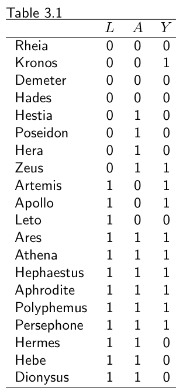
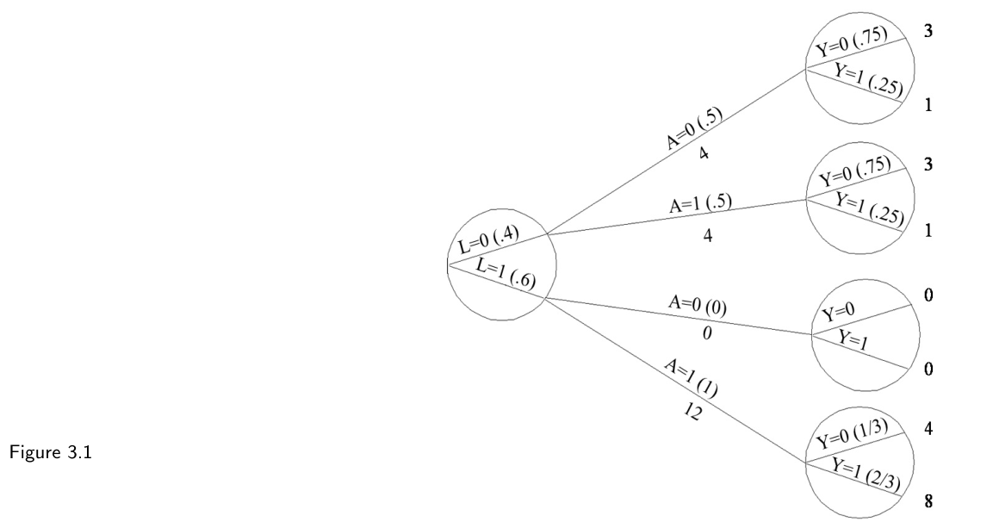

第一部分 · 无模型的因果推断 · Part I — Causal inference without models
第 3 章 · 观察性研究
Hernán MA, Robins JM（2020）. Causal Inference: What If. Chapter 3. 本页为中文全文翻译，附译注。
再想想那个因果问题：“一个人抬头看天，会让其他路人也抬头吗？”上一章考虑过随机化试验，你却得出结论：抬头那么多次，既费时间又伤颈椎。于是你决定换一种研究：找个站在街角、没抬头的行人，再找第二个正朝他走过去、也没抬头的行人，观察并记录接下来 10 秒里两人的举动，如此重复几千次。然后你可以比较：在第一个人抬头之后才抬头的第二个行人比例，与在第一个人抬头之前就抬头的第二个行人比例。这种由研究者观察并记录相关数据的科学研究，就称为观察性研究（observational study）。 如果你真做了上面那种观察性研究，批评者会说：两个路人都抬头，可能不是因为第一个人抬头导致第二个抬头，而是因为他俩都听到了头顶一声雷响，或都开始落下了雨点——所以你的研究发现无法判定“一人抬头是否使他人抬头”。这些批评不适用于随机化试验，这正是随机化试验在因果推断理论中处于核心地位的原因之一。但在实践中，随机化试验对估计因果效应的重要性反而比较有限。许多科学研究并非试验。人类大量知识来自观察性研究：想想演化、板块运动、全球变暖或天体物理，想想人类是怎么知道热咖啡会烫伤的。本章回顾：在哪些条件下，观察性研究会导出有效的因果推断。
3.1 可识别条件
理想随机化试验能用来识别和量化平均因果效应，因为处理的随机分派带来了可交换性。以心脏移植与死亡率的边际随机化试验为例：若那些接受了移植的人没接受移植，其预期死亡风险会与那些实际没接受移植的人相同。结果就是，该随机化试验得出的 0.7 的关联风险比，预期等于因果风险比。
相比之下，观察性研究可能说服力差得多（例子见本章引言）。我们不愿把观察性关联赋予因果解释，一个关键原因是缺少随机的处理分派。比如，在某项心脏移植与死亡率的观察性研究中，接受心脏移植的人更可能原本就有严重的心脏问题。那么，若那些接受了移植的人没接受移植，其预期死亡风险会高于那些实际没接受移植的人。结果，该观察性研究得出的 1.1 的关联风险比，是移植对死亡率的真实有益效应（把关联风险比推向小于 1）与接受移植者本身更高的死亡风险（把关联风险比推向大于 1）之间的一个折中。在观察性研究里，处理与结局之间关联的最佳解释，未必是处理对结局的因果效应。
我们承认随机化试验对因果推断有内在优势，但有时我们被观察性研究困住，只能用它回答因果问题。怎么办？我们像处理是“以已测协变量 L 为条件随机分派”那样去分析数据——尽管我们常知道这至多是个近似。从观察性数据做因果推断，于是就围绕着一个希望打转：这项观察性研究能被看作一项条件随机化试验。
非正式地，若满足以下条件，一项观察性研究就可以被构想成条件随机化试验：
1. 被比较的各处理取值，对应于定义明确的干预（intervention），而这些干预又对应于数据中的处理版本；
2. 接受每个处理取值的条件概率，虽不由研究者决定，却只依赖于已测协变量 L；
3. 给定 L 时，接受每个处理取值的概率大于零，即正的（positive）。
本章就在观察性研究的语境下描述这三个条件。条件 1 在第 1 章被称为一致性（consistency），条件 2 在前几章被称为可交换性（exchangeability），条件 3 在技术要点 2.3 里被称为可阳性性（positivity）。

我们会看到，这些条件常常很“英雄式”（heroic），这就解释了为什么从观察性研究得出的因果推断总被人怀疑。不过，如果观察性研究与条件随机化试验的类比碰巧成立，我们就能用上一章讲的方法——IP 加权或标准化——从观察性研究里识别因果效应。因此我们把这些条件称为可识别条件（identifiability conditions）或假设。例如，上一章我们用表 2.2 的数据（来自条件随机化试验）算出了等于 1 的因果风险比。如果现在把同样的数据（即表 3.1）看成来自一项观察性研究，且上述三个可识别条件成立，我们同样会算出等于 1 的因果风险比。
重要的是，在理想随机化试验里，可识别条件由设计保证成立。也就是说，对一项条件随机化试验，我们只需表 3.1 的数据就能算出那个等于 1 的因果风险比。相比之下，要从观察性研究识别因果风险比，我们必须假设可识别条件成立——而这当然可能不成立。从观察性数据做因果推断需要两个要素：数据和可识别条件。关于可识别性更精确的定义见精细辨析 3.1。
当任一可识别条件不成立时，观察性研究与条件随机化试验的类比就破裂了。此时，从观察性数据做因果推断还有其他可能的路径，但需要另一套可识别条件。其中一条是寄望于某个处理的预测变量——称为工具变量（instrumental variable）——表现得像是在给定已测协变量下被随机分派了一样。工具变量方法我们在第 16 章讨论。
毫不意外，基于“与条件随机化试验类比”的观察性方法，在传统上受青睐于这个类比常显合理的学科（比如流行病学）；而工具变量方法则在那些观察性研究往往难以被构想成“给定已测协变量下的条件随机化试验”的学科（比如经济学）里受青睐。在第 16 章之前，我们把焦点放在依赖“观察性研究能够模拟一项条件随机化试验”这一能力的因果推断方法上。下面我们更详细地描述这三个可识别条件。
3.2 可交换性
关于可交换性 Ya ⊥⊥ A 我们已经说得很多。在边际（即无条件）随机化试验里，接受处理者与未接受处理者可交换，因为若未接受处理，接受处理者本该经历与未接受处理者相同的平均结局，反之亦然。之所以如此，是因为随机化保证了结局的独立预测因子在处理组与对照组间均匀分布。
独立预测结局的协变量，在二值结局的情形常被称为结局的危险因素（risk factors）。以表 3.1 汇总的研究为例：我们在上一章说过，这项研究里可交换性显然不成立，因为基线时危重状态 L = 1 者在接受处理者中占 69%，在未接受处理者中只占 43%。这种独立结局预测因子分布的失衡，在边际随机化试验里不预期发生（当然，这种失衡可能偶然出现，但我们先姑且假定研究足够大，足以排除偶然发现）。
另一方面，在“接受处理概率依赖于 L”的条件随机化试验里，按设计就预期会出现独立结局预测因子 L 在两组间分布的失衡。表 3.1 的研究正是这样一个条件随机化试验：接受处理者与未接受处理者不可交换——因为研究开始时接受处理者的平均预后更差——但给定 L 的各水平，两组是可交换的。在 L = 1（危重）子集里，接受处理者与未接受处理者可交换，因为若未接受处理，接受处理者本该经历与未接受处理者相同的平均结局，反之亦然；L = 0 子集同理。等价地说：在条件随机化试验里条件可交换性 Ya ⊥⊥ A|L 成立，因为在 L 的各水平内，所有其他结局预测因子在处理组与对照组间均匀分布。
回到观察性研究。当处理不是由研究者随机分派时，接受处理的理由很可能关联着某些结局预测因子。也就是说，与条件随机化试验一样，在观察性研究里，结局预测因子的分布一般在处理组与对照组间会有差异。例如，表 3.1 的数据可能来自一项观察性研究，其中医生倾向于把稀缺的心脏移植留给最需要的人，即危重状态 L = 1 的个体。事实上，如果唯一在两组间分布不均的结局预测因子就是 L，那么表 3.1 的研究既可以被描述为 (i) 一项观察性研究，其中处理概率 A = 1 在 L = 1 者为 0.75、在 L = 0 者为 0.50；也可以被描述为 (ii) 一项（非盲的）条件随机化试验，其中研究者在 L = 1 者中以 0.75 的概率、在 L = 0 者中以 0.50 的概率随机分派 A = 1。两种描述在逻辑上等价。无论哪种描述，条件可交换性 Ya ⊥⊥ A|L 都成立，从而都可以用标准化或 IP 加权来识别因果效应。
当然，观察性研究的关键问题是：L 是不是唯一一个在两组间分布不均的结局预测因子。可惜这个问题注定没有答案，所以我们的研究者必须愿意在“条件可交换性 Ya ⊥⊥ A|L 成立”这个假设下工作。还要注意，并非所有在两组间分布不均的变量都要纳入 L。例如，心脏移植分配给那些排斥概率低的个体——即某种人类白细胞抗原（HLA）基因的心脏，会分给恰好有相容基因的个体。因为给定 L 和 A 时，HLA 基因并不是死亡率的预测因子，所以在 L 各水平内处理分派实质上随机，HLA 也就不必纳入分析。
没有随机化，就无从保证条件可交换性成立。比如，假设研究者不知道：医生更倾向把心脏移植给非吸烟者。考虑两个 L = 1 的个体，一个吸烟（U = 1）、一个不吸烟（U = 0），后者接受处理 A = 1 的概率更低。当这个重要的结局预测因子——吸烟——在 L = 1 层内，在接受处理者（吸烟者比例较低）与未接受处理者（吸烟者比例较高）之间分布不同时，给定 L 的条件可交换性就不成立。重要的是，收集吸烟的数据，并不能排除其他未被测量、分布也不平衡的结局预测因子的存在。
因此，在观察性研究里，Ya ⊥⊥ A|L 可能不成立。具体来说，若存在未被测量的、独立的结局预测因子 U，使得在 L 各层内接受处理 A 的概率依赖于 U，那么条件可交换性 Ya ⊥⊥ A|L 就不成立。更糟的是，即便条件可交换性 Ya ⊥⊥ A|L 成立，研究者也无法从经验上证实它确实成立。如果他们没收集吸烟的数据，又怎么去核对吸烟在两组间分布相等？那些其他未被测量的结局预测因子 U 呢？在条件可交换性下分析观察性研究时，我们必须寄望：专家知识正确地引导我们收集了足够的数据，使这个假设至少近似成立。
研究者可以利用专家知识，提高条件可交换性假设的合理性。他们可以测量许多相关的变量 L（例如那些既决定处理、又独立预测结局的变量），而不是像表 3.1 那样只测一个变量，然后假设由所有这些 L 的组合所定义的层内，条件可交换性近似成立。遗憾的是，无论 L 包含多少变量，都没有办法检验这个假设是否正确，这让从观察性数据做因果推断成了一项冒险。因果推断的有效性要求研究者的专家知识是正确的。这些知识被编码为“给定已测协变量的可交换性”这一假设，用来补充数据，以期识别感兴趣的因果效应。
3.3 可阳性性
有些研究者计划做一项试验，计算心脏移植 A 对 5 年死亡率 Y 的平均效应。毋庸多言，研究者会把一些人分到处理水平 A = 1、另一些人分到 A = 0。考虑反面：研究者把所有人全分到 A = 1 或全分到 A = 0。那就荒唐了。所有人接受同一处理水平，平均因果效应就不可能算出来。我们必须这样分派处理：以近乎确定的把握，每个处理组都会分到一些人。换句话说，我们必须保证：被分到每个处理水平的概率大于零——一个正的概率。这就是可阳性性（positivity）条件。
描述试验时我们没强调可阳性性，是因为这些条件性试验里它被当作理所当然。在边际随机化试验里，Pr[A = 1] 和 Pr[A = 0] 都由设计保证为正。在条件随机化试验里，对所有符合研究资格水平的变量 L，条件概率 Pr[A = 1|L = l] 和 Pr[A = 0|L = l] 也由设计保证为正。例如，若表 3.1 的数据来自一项条件随机化试验，给定 L 时分配到心脏移植的条件概率会是：危重者为 Pr[A = 1|L = 1] = 0.75，其余为 Pr[A = 1|L = 0] = 0.50。可阳性性在给定 L 时成立，因为这两个概率都不为 0（也不为 1，否则无心脏移植 A = 0 的概率就成了 0）。于是我们说：当对因果对比中涉及的每个 a 都有 Pr[A = a|L = l] > 0 时，可阳性性成立。其实这个定义不完整：如果我们研究总体只限于 L = 1 组，那就没有必要要求 L = 0 组里的可阳性性。可阳性性只需要对“所关注总体中实际出现的那些 l 值”成立。
可阳性性：Pr[A = a|L = l] > 0，对所有满足 Pr[L = l] ≠ 0 的 l 成立
此外，可阳性性只要求那些为达到可交换性所必需的变量 L 上成立。例如，在表 3.1 的条件随机化试验里，我们不会去问“蓝眼睛的人接受处理的概率是否大于 0”，因为“蓝眼睛”这个变量对实现两组可交换性并非必需（它既不是给定 L 和 A 时结局 Y 的独立预测因子，也没被用来分派处理）。也就是说，标准化风险和 IP 加权风险在只调整 L 之后就等于反事实风险；可阳性性不适用于像“蓝眼睛”这种不需要调整的变量。
在观察性研究里，可阳性性和可交换性都无从保证。比如，若医生总是给危重者 L = 1 移植心脏，即 Pr[A = 0|L = 1] = 0（如图 3.1），可阳性性就不成立。可交换性与可阳性性的一个区别是：可阳性性有时可以从经验上验证（见第 12 章）。例如，如果表 3.1 对应于一项观察性研究的数据，我们会得出结论：L 上的可阳性性成立，因为在 L 的每个水平（L = 0 和 L = 1）里，A 的每个水平（A = 0 和 A = 1）都有人。上一章我们对标准化和 IP 加权的讨论，对可交换性条件是显式的，对可阳性性条件却只是隐含假设（在技术要点 2.3 里才显式）。我们此前对标准化风险和 IP 加权风险的定义，其实只有在可阳性性成立时才有意义。要直观理解为什么可阳性性不成立时标准化与 IP 加权风险定义不良，看看图 3.1：如果 L = 1 组里没有未接受处理者（A = 0），数据就根本不含任何信息，能用来模拟“若所有接受处理者都未处理”会发生什么——因为没有任何 L = 1 的未接受处理者，可以与 L = 1 的接受处理者构成可交换。细节见技术要点 3.1。

3.4 一致性：第一步，定义反事实结局
一致性（consistency）指的是：每个接受处理者的观测结局，等于他若接受该处理时的结局；每个未接受处理者的观测结局，等于他若保持未处理时的结局，即对所有 A = a 的个体都有 Ya = Y。这话听起来显然为真，有些读者或许会想：难道还有一致性不成立的情况？毕竟，如果我吃阿司匹林（A = 1）然后死了（Y = 1），按定义我的反事实结局 Ya=1 不就等于 1 吗？一致性条件表面上的简单是一种欺骗。我们把一致性拆开，显式说明它的两个主要组成部分：(1) 通过详细规定上标 a，对反事实结局 Ya 给出精确的定义；(2) 把反事实结局与观测结局联系起来。本节处理一致性的第一个组成部分。
再考虑心脏移植 A 与 5 年死亡率 Y 的随机化试验。在把病人纳入研究之前，研究者写了一份方案，详细描述了两个感兴趣的干预——心脏移植 a = 1 和内科治疗 a = 0。比如，研究者规定：被分到心脏移植的人，要接受某些术前流程、麻醉、外科技术、术后护理和免疫抑制治疗，以尽量确保每个人接受的都是同一版本的处理。如果方案不规定这些细节，每位医生就可能对“心脏移植”这个处理实施不同版本，也许用各自偏好的外科技术或免疫抑制方案。我们把 Ya=1 定义为：如果遵循试验方案中干预 a = 1 的指示，该个体的结局；Ya=0 同理。为简洁，我们假定所有个体都遵循了所分配的方案。
在观察性研究里，我们可以类似地刻画每个处理版本 a。例如，对心脏移植因果效应的观察性研究，我们采用与上面随机试验相同的流程；对锻炼因果效应的观察性研究，我们会规定锻炼的时长、频率、强度、类型（游泳、跑步……），以及原本花在锻炼上的时间会改作什么用（和乐队排练、看电视……）。当因果问题涉及生物性（如血压、LDL 胆固醇、体重）或社会性（如社会经济地位）因素时，规定处理版本 a 的难度会上升。以“肥胖”为例：一些研究者认为，40 岁时的肥胖（在某个总体里）对 50 岁前死亡风险 Y 的因果效应值得关注，量化它是一项正当的科学追求。但是，像体重指数（及其二分出的“肥胖”）或血压这类生物状态，只能通过干预其成因来改变。结果，这些状态本身的因果效应（及相应的反事实）常被认为定义不良。
我们现在要论证：许多像“肥胖”这样的变量，对定量因果推断而言可能定义得不够好。假设 Zeus 35 岁生日那天，我们决定通过减少每日锻炼，让他在 40 岁时变肥胖。他在 49 岁遭遇致命心梗。再假设，在一个与我们相同的平行宇宙里，Zeus 35 岁生日那天，我们决定通过增加热量摄入，让他在 40 岁时变肥胖。他在 50 岁前没有遭遇致命心梗。也就是说，两个宇宙里 Zeus 都肥胖，但只有一个宇宙里他发了致命心梗。
因为 Zeus 在肥胖下的反事实结局可能是死、也可能是不死，我们得出结论：“肥胖”这个词太含糊，无法定义反事实结局。问题 again 在于：我们只能通过那些可能经由“不涉及肥胖的因果路径”影响结局的干预（如饮食、锻炼）来改变肥胖的取值。相反，如果我们关心的是一种减肥药 A 对死亡率的因果效应，这个问题就不会出现，因为改变 A 的取值不需要任何其他干预（如饮食或锻炼）。也就是说，干预“药片”下的反事实结局对每个人都是良定义的。当然，这个反事实结局的取值仍可能依赖于该个体任何先前干预（如吸烟和锻炼）的取值。
我们越精确地定义 a = 1 和 a = 0 的含义，因果问题就越精确。但处理定义的绝对精确，既不必要也不可能。比如对锻炼，我们无需规定绕小区公园跑步是顺时针还是逆时针。科学家一致认为跑步方向无关紧要，因为改变它不会导致不同结局。也就是说，我们只需要“足够良定义”的干预 a，使得不再有有意义的含糊留下。
这就引出一个问题：“我们怎么知道一个处理是足够良定义的？”或者等价地问：我们怎么知道“不再有有意义的含糊”了？答案是“我们不知道”。宣布一个处理足够良定义，是基于现有实质知识、由专家之间达成共识的事。今天我们认为跑步方向无关紧要，但未来的研究若证明——比如说——跑步时身体向右倾（而非向左倾）有害，就可能推翻我们。在历史的任何时刻，撰写随机试验方案书的专家，都试图动用他们掌握的专题知识，尽可能消除含糊。但某种含糊是所有因果问题固有的。因果问题的含糊，可以通过更详细地规定处理来减少，却无法被彻底消除。
实践中，随机试验的方案书可能未能规定干预的某些相关组成部分。比如，上面心脏移植研究的方案书没有规定实施心脏移植的外科医生经验。于是，经验丰富和经验不足的外科医生都参与了研究。因为移植经验不足会影响术后死亡率是众所周知的，所以“若所有人都接受处理，风险 Pr[Ya=1 = 1]”将依赖于参与外科医生经验的未知分布。也就是说，在一项新社区里，若外科经验分布不同，平均因果效应就会与试验总体里的不同，即便新总体遵循与试验完全相同的方案书。
事实上，Pr[Ya=1 = 1] 的值——从而平均因果效应的值——可能在“同一总体、同一方案书”的两项试验之间就有差异。如果方案书允许 a = 1 包含几个对感兴趣结局有不同因果效应的处理版本，且每项试验用了不同的处理版本，这种差异就会出现。精细辨析 3.3 描述了一个“方案书相同、因果效应却不同”的例子。处理版本的不同分布，会影响因果效应的可搬运性（transportability，见第 4 章）。同样的考量也适用于观察性研究。
本节讨论揭示出因果推断的一个内在特征：因果问题的表述，取决于领域专业知识和非正式判断。我们当下视为“有意义的因果问题”的，未来如果发现未规定的处理组成会影响结局、从而影响因果效应的幅度，就可能被看作太含糊。多年以后，科学家大概会把我们的“肥胖问题”细化到我们今天几乎不懂的细胞层面修饰。再次强调，“足够良定义的处理”依赖随时代变化的专家共识。精细辨析 3.4 把这段讨论与早先的若干提议联系起来。
在宣布“不再有有意义的含糊”之前，先把因果问题打磨清楚，是稳健因果推断的良好实践。比如，宣称我们关心“肥胖的效应”，可能只是讨论的起点；在讨论中，我们会通过细化处理的规定来 sharpen 因果问题，直到——但愿——与同事达成共识。处理规定得越精确，因果问题定义得越好，研究者与决策者之间产生误传的机会也越少。
3.5 一致性：第二步，把反事实与观测数据联系起来
提醒一下，一致性条件说的是：对 A = a 的个体有 Ya = Y。上一节我们描述了一致性的第一个组成部分：足够良定义、不再有有意义的含糊的反事实结局 Ya。本节描述观察性研究中一致性的第二个组成部分：确保等式 Ya = Y 成立，即把反事实结局与观测数据联系起来。
假设我们的目标，是用观察性数据量化心脏移植 a = 1 与内科治疗 a = 0 的效应。我们仔细规定了感兴趣的这两个处理版本 a = 1 和 a = 0。专家一致认为 a = 1 和 a = 0 足够良定义，因此反事实结局 Ya=1 和 Ya=0 的规定里不再有有意义的含糊。具体来说，我们规定心脏移植 a = 1 包含某些术前流程、麻醉、外科技术、术后护理和免疫抑制治疗，以及“过去五年至少做过 10 例心脏移植”的外科医生。现在假设：在我们的观测数据里，所有外科医生过去五年只做过 5 到 9 例心脏移植。那么，我们精心定义的那个反事实结局 Ya=1，无法与任何观测结局 Y 联系起来，因为研究总体里没人接受过 a = 1 这个处理版本。
也就是说，一致性条件的有效性，既受像“肥胖”那样定义不良的处理（上一节）威胁，也受像“心脏移植”那样定义良好、却不在数据中出现的处理（本节）威胁。要把反事实结局 Ya=1 与观测结局 Y 联系起来，我们必须保证：只有那些接受处理版本 a = 1 的个体，才在分析中被当作“接受处理者”（A = 1），a = 0 同理。这意味着：如果我们想用观察性数据量化因果效应 Pr[Ya=1 = 1] − Pr[Ya=0 = 1]，我们需要的数据里，得有一些个体接受了 a = 1、也有一些接受了 a = 0。能描述一个像我们这样良定义的干预 a 并没有用，如果干预在观测数据里根本没发生——即，如果我们不能合理地假定等式 Ya = Y 对至少部分个体成立。
处理“感兴趣版本”与“观测数据中的版本”之间的错配，一个明显的应对办法是：假设那些处理版本的效应完全相同——即存在处理变体无关性（treatment variation irrelevance，见精细辨析 1.2）。有些情形下这个假设是不错的近似。比如，也许可以说：做完 5 例移植之后就不会再获得相关经验了，因此我们完全可以用“所有外科医生至少做过 5 例”的观察性数据，来正确识别“要求所有外科医生此前至少做过 10 例”的心脏移植 a = 1 的效应。
但在另一些情形下，假设处理变体无关性可能并不合理。比如，若关心减肥对死亡率的效应，很难说服用“通过锻炼改变体重”与“通过减重手术改变体重”对死亡率的效应相同。要让感兴趣的干预 a = 1 与观测到的“处理”值 A = 1 匹配，从而把反事实结局 Ya=1 等同于观测结局 YA = Y，就需要收集关于处理版本的数据。这些信息之所以必要，不仅是为了发现“感兴趣的处理版本”与“手头数据”之间的错配，也是为了能就“可用的处理版本能否替代感兴趣的处理版本”展开有依据的谈论。在我们的心脏移植研究里，如果没有收集外科医生经验的信息，我们就无法判断反事实 Ya=1 能否与观测的 Y 联系起来。
因为处理版本的数据在观察性研究里常常缺失，一致性常常受损。既然在观察性研究里达成一致性并不容易，一个好做法是尽可能把我们的推理透明化，好让别人能直接质疑我们的论证。下一节描述实现这种透明的一种流程。
目标试验
我们已经把平均因果效应定义为：不同处理值下平均反事实结局之间的对比。因为这些干预需要良定义，我们可以设想一项（假想的）随机化试验来量化感兴趣的因果效应。我们把那项假想试验称为目标试验（target experiment）或目标试验（target trial）。当进行目标试验不可行、不合伦理或太耗时，我们就求助于对观察性数据的因果分析。也就是说，从观察性数据做因果推断，可以看作试图模拟（emulate）目标试验。如果模拟成功，观察性研究与（假想进行的）目标试验的结果就没有差别。
本章我们探究了三个条件——可交换性、可阳性性、一致性——它们使我们能把一项观察性研究与一项（条件随机化的）目标试验等同起来。正如 3.1 节所说，如果这些条件成立，就能套用上一章讲的方法——IP 加权或标准化——从观察性数据计算因果效应。
因此，“你试图模拟的是哪一项随机化试验？”是从观察性数据做因果推断的一个关键问题。对我们想用观察性数据估计的每一个因果效应，我们都可以：(i) 规定那项我们想做却做不了的目标试验，以及 (ii) 描述观察性数据如何被用来模拟那项目标试验。规定目标试验——从而规定感兴趣的因果效应——需要规定试验方案的关键组成部分：资格标准、干预（或一般地说处理策略）、结局、随访的起点与终点，以及因果对比。
因此，成功模拟目标试验，要求观察性数据集含有足够的信息，以识别合格个体、把他们归入由所受干预定义的各组、并确认他们在随访期间的结局。例如，要估计心脏移植的因果效应，我们先规定目标试验方案的组成部分，再用观察性数据去尝试模拟其中每一项。这种对目标试验的显式模拟，通过让干预——从而让因果问题——良定义，改善了从观察性数据做的因果推断（目标试验框架的详述见第 22 章）。一旦因果问题经由一项目标试验被良定义，研究者就能聚焦下一个根本问题：如何实现各组间的条件可交换性。
上述一切，都假设感兴趣的干预足够良定义，能被翻译成一项假想试验。但如果基于当前科学知识，因果问题根本无法翻译成一项目标试验，我们该怎么办？举个例子：在 40 岁、肥胖且不吸烟的个体中，“减肥”对死亡率的因果效应，就有些含糊，因为实现减肥的实际干预仍未指定。事实上，要让因果效应（及相应反事实）足够良定义，需要很强的（可能错误的）假设。比如我们上面说过：假设通过吸烟或手术诱发减肥的效应，等同于通过锻炼或饮食诱发减肥的效应，并不合理。但假设某些研究者愿意相信：锻炼和饮食只通过减肥影响结局，因此通过锻炼或饮食实现的减肥效应相同。
在这个“处理变体无关性”的强假设下，研究者愿意在一个“不吸烟、不接受手术”的总体里，模拟一项减肥的目标试验。目标试验的方案书不会规定用哪种方法减肥，却会仔细规定干预的其他组成部分。比如，目标试验会让个体从 40 岁起、只要体重指数还高于 25，每年减掉 5% 的体重，并假设通过锻炼还是饮食减掉并不重要。许多专家会对“锻炼或饮食减肥的处理变体无关性”这个假设皱眉头，但他们在别的场景下或许愿意接受它。比如，若关心血压的效应，研究者可能愿意假设：降压药物对结局的效应完全经由血压中介，因此用以实现某个血压变化的具体药物并不重要。
显式规定干预，对模拟目标试验也很有帮助，因为研究者将需要调整那些为达成条件可交换性所必需的变量（如吸烟史、锻炼、饮食……），而当干预部分未指定时，达成条件可交换性一般更困难（见下）。即便干预是否足够良定义还不清楚，显式的目标试验模拟也能防止研究者做出与自己信念不相符的隐含一致性假设。比如，假设一些研究者普遍关心体重对健康的影响，却懒得提出一项目标试验，而是做了一个过度简化的分析，比较 40 岁时肥胖与非肥胖个体的死亡风险。那个比较隐含地对应着一项目标试验：肥胖个体在基线被瞬间变成体重指数 25 的人（通过一次大范围抽脂？）。这种目标试验无法被模拟，因为现实世界里几乎没人——如果真有人的话——经历这种瞬间变化，从而反事实结局无法与观测结局联系起来。包括做数据分析的科学家在内的所有人，都会同意：一致性不成立。
把从观察性数据做因果推断，构想成“试图模拟一项目标试验”，并非被普遍接受。有些作者先入为主地假定“A 对 Y 的平均因果效应”是一个良定义的量，无论 A 和 Y 代表什么（只要 A 在时间上先于 Y）。他们的论证大致是：
我们或许并不精确知道一项观察性研究估计的是哪个具体因果效应，但如果确实存在一个因果效应，这一点真的那么重要吗？如果能得知“若强行让所有肥胖者都变成正常体重，本可预防许多死亡”，即便实现这种转变所需的干预未被指定，也是有价值的。
这个论证很有吸引力，但如上所述，它有两个问题。
第一，未规定的干预可能不合理或不切实际。比如，观察性研究里看似直白的“肥胖与非肥胖个体的比较”，掩盖了“让总体中每个人都瞬间变成非肥胖”这类干预的真实复杂性。如果这些干预被显式说明，研究者就会意识到：这些剧烈的变化在现实世界里不太可能被观测到，对任何考虑减肥干预的人都没有意义。
把因果推断锚定在一项目标试验上，不仅有助于在观察性分析里 sharpen 因果问题的规格，也让推断对决策更相关。比如如前所述，一个更合理——即便仍不够良定义——的干预，可能是每年减掉 5% 的体重指数。
第二，要达成接受处理者与未接受处理者的条件可交换性，研究者需要识别并测量那些使两组条件可交换的协变量 L。然而，对应于不同假想干预的处理，其结果使条件可交换性成立的协变量集合 L 一般也不同。如果我们放弃尽可能刻画干预，观察性研究里关于条件可交换性那惯常的不确定性，会被大大加剧。
当一项目标试验无法被规定和模拟时，观察性数据对非因果的预测仍可能很有用。肥胖个体的死亡率高于非肥胖个体，意味着肥胖是死亡率的一个预测因子——与死亡率相关联。这是一条重要信息，可用来识别高死亡风险个体。说“肥胖预测——即关联——死亡率”，我们对因果保持不可知：肥胖预测死亡率，可能像吸烟预测肺癌那样，也可能像随身带打火机预测肺癌那样。因此，肥胖与死亡率之间的关联，是一个有趣的、催生进一步研究的假说（为什么肥胖会预测死亡率？），但关联的大小未必对应于某个因果效应的幅度。